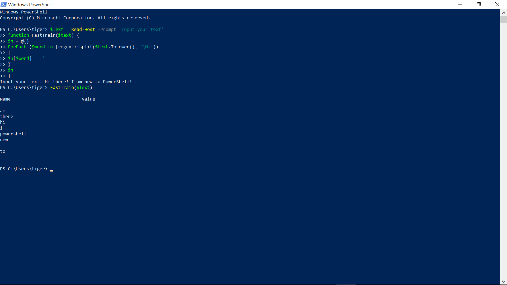

Troubleshoot problems updating Windows 10
In Windows 10, you decide when and how to get the latest updates to keep your device running smoothly and securely. This article will help you answer questions and troubleshoot common problems with your Windows 10 update.
Windows 10 requires certain requirements to run on a pc Just as with space requirements, your PC will also have to be capable of running Windows 10. This means that it must reach certain minimum system requirements. The requirements for running Windows 10 are relatively low: A processor of 1GHz or faster; 1GB (32-bit) or 2GB (64-bit) of RAM; 30GB of free drive space; Microsoft DirectX 9 graphic device; and a Microsoft account combined with internet access. To find out your PC's spec, go to the Control Panel and select System and Security, then System. However, keep in mind that these are the m inimum requirements, and you should shoot for higher specs to have a smooth and enjoyable experience.
When you install Windows 10 onto a new pc you would assume it would be a clean install, but Microsoft has decided to put ads in Windows 10. These programs which run in the background could impact performance of your PC and make it slow. To remove these programs Microsoft has put in place you will need to follow some simple steps to get rid of them. Go to windows start menu type in “Windows Powershell Admin'' click it and you will see a blue command box which is where you will type in the following command “Get-AppxPackage APPLICATION_NAME | Remove-AppxPackage'' these will perform the command and start deleting the pre installed application.
Example of Powershell image
Windows 10 is, in many ways, a truly internet based operating system. Mostly, this is a bonus but there are times when it isn't and Microsoft's attitude towards operating system updates is one such time The most annoying part of automatic updates is the restarting, which can seemingly come at random and inconvenient times. The simplest way to counteract this is to head to Windows Update in Settings > Update & Security, click on Advanced Options and then Notify to Schedule Restart, which means the OS will request a reboot instead of interrupting everything you’re working on.

Example of Windows Update screen image